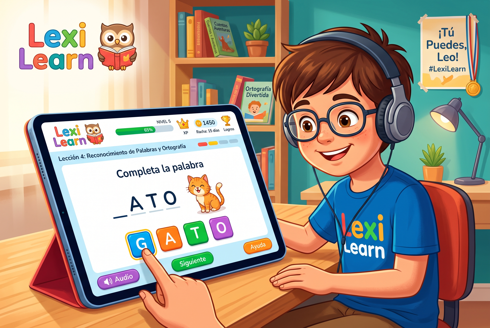

Lexi learn es una platafrma educativa interactiva para estudiantes con dislexia, similar a Duolingo. En lugar de solo convertir documentos a audio, el sistema evaluaría las dificultades del estudiante en áreas como lectura, comprensión, ortografía, memoria y reconocimiento de palabras, y a partir de sus resultados generaría ejercicios personalizados. El backend analizaría sus errores, aciertos y progreso para adaptar automáticamente la dificultad y recomendar nuevas actividades. Además, podría utilizar OCR y TTS para convertir materiales académicos en ejercicios interactivos, junto con un sistema de niveles, XP, logros y seguimiento del progreso, buscando que el estudiante mejore sus habilidades de manera progresiva y entretenida.
Oscar Timaran y Sebastian Mayorga.